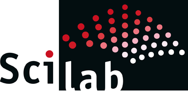

Timeline
IEEE
Kochi Hub Technical Team
Member
2016 - present
The Kochi Hub Technical Team(KHTT) is a team of IEEE volunteers coordinating and conducting various events across the Kochi subsection.
Summer Internship
FOSSEE, IIT Bombay
June-July 2017
The aim of this project was to interface open source libraries to develop a image processing and computer vision toolbox for Scilab. During the course of this internship we modified some of the already existing functions and also added new functionalities to the toolbox.
I developed functions related to image stitching, optical flow, convex hulls, edge detection, contour detection and approximation and point clouds.The functions were developed with the same syntax and calling sequence as the Matlab Image Processing/Computer Vision toolbox.
The functions for the toolbox were implemented using C++ and were callable from the Scilab GUI. The C++ code and Scilab were linked using scilab functions.
The OpenCV and PCL libraries were used for this purpose.


CodeChef
Student Representative for SnackDown
Feb - May 2017
Was a student representative for CodeChef SnackDown 2017. As a representative I had to spread awareness about the contest and encourage participation from my college.
ACM ICPC
Regionals
December 2016
Represented college at the regional round of ACM ICPC 2017.
Summer Internship
Neo Green Labs, Kochi
June - July 2016
During the course of two months I worked on :